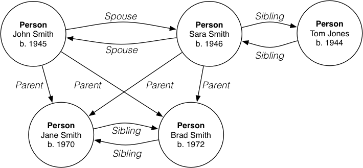

COMP9315 Week 10 Thursday Lecture
COMP9315 24T1 ♢ Week 10 Thursday Lecture ♢ [0/60]
- Assignment 1
- manual adjustment of marks for very poor submissions
- Assignment 2
- 430/490 submissions so far ... 60 people don't want marks?
- Pre-exam Consultations
- TBA for the period April 22 to May 9
- MyExperience
- open now ... please give feedback ... closes April 25
- only 60/490 have put in a response
COMP9315 24T1 ♢ Week 10 Thursday Lecture ♢ [1/60]
COMP9315 24T1 ♢ Week 10 Thursday Lecture ♢ [2/60]
A distributed database (DDB) is
- collection of ≥ 1 logically-related databases
- distributed over a network (generally a WAN)
A
distributed database management system (DDBMS) is
- software that manages a distributed database
- providing access that hides complexity of distribution
A DDBMS may involve
- instances of a single DBMS (e.g. ≥1 PostgreSQL servers)
- a layer over multiple different DBMSs (e.g. Oracle+PostgreSQL+DB2)
COMP9315 24T1 ♢ Week 10 Thursday Lecture ♢ [3/60]
❖ Distributed Databases (cont) | |
User view:
COMP9315 24T1 ♢ Week 10 Thursday Lecture ♢ [4/60]
❖ Distributed Databases (cont) | |
Architecture:
COMP9315 24T1 ♢ Week 10 Thursday Lecture ♢ [5/60]
❖ Distributed Databases (cont) | |
Two kinds of distributed databases
- parallel database on a distributed architecture
- single schema, homogeneous DBMSs
- independent databases on a distributed architecture
- independent schemas, heterogeneous DBMSs
The latter are also called
federated databases
Ultimately, the distributed database (DDB) provides
- global schema, with mappings from constituent schemas
- giving the impression of a single database
COMP9315 24T1 ♢ Week 10 Thursday Lecture ♢ [6/60]
❖ Distributed Databases (cont) | |
Advantages of distributed databases
- allow information from multiple DBs to be merged
- provide for replication of some data (resilience)
- allow for possible parallel query evaluation
Disadvatanges of distributed databases
- cost of mapping between different schemas (federated)
- communication costs (write-to-network vs write-to-disk)
- maintaining ACID properties in distributed transactions
COMP9315 24T1 ♢ Week 10 Thursday Lecture ♢ [7/60]
Partitioning/distributing data
- where to place (parts of) tables
- determined by usage of data (locality, used together)
- affects communication cost ⇒ query evaluation cost
- how to partition data within tables
- no partitioning ... whole table stored on ≥1 DBMS
- horizontal partitioning ... subsets of rows
- vertical partitioning ... subsets of columns
Problem: maintaining consistency
COMP9315 24T1 ♢ Week 10 Thursday Lecture ♢ [8/60]
❖ Data Distribution (cont) | |
Consider table R horizontally partitioned into R1, R2, ..., Rn
Fragmentation can be done in multiple ways, but need to ensure ...
Completeness
- decompostion is complete iff each t∈R is in some Ri
Reconstruction
- original R can be produced by some relational operation
Disjoint
- if item t ∈ Ri, then t ∉ Rk, k ≠ i (unless you want replication)
COMP9315 24T1 ♢ Week 10 Thursday Lecture ♢ [9/60]
Query processing typically involves shipping data
- e.g. reconstructing table from distributed partitions
- e.g. join on tables stored on separate sites
Aim: minimise shipping cost (since it is a networking cost)
Shipping cost becomes the "disk access cost" of DQOpt
Can still use cost-based query optimisation
- consider possible execution plans, choose cheapest
COMP9315 24T1 ♢ Week 10 Thursday Lecture ♢ [10/60]
❖ Query Processing (cont) | |
Distributed query processing
- may require query ops to be executed on different nodes
- node provides only source of some data
- some nodes may have limited set of operations
- needs to merge data received from different nodes
- may require data transformation (to fit schemas together)
Query optimisation in such contexts is
complex ...
- larger space of possibilities than single-node database
COMP9315 24T1 ♢ Week 10 Thursday Lecture ♢ [11/60]
Distribution of data complicates tx processing ...
- potential for multiple copies of data to become inconsistent
- commit or abort must occur consistently on all nodes
Distributed tx processing handled by
two-phase commit
- initiating site has transaction coordinator Ci ...
- waits for all other sites executing tx
T to "complete"
- sends
<prepare T> message to all other sites
- waits for
<ready T> response from all other sites
- if not received (timeout), or
<abort T> received, flag abort
- if all other sites respond
<ready T>, flag commit
- write
<commit T> or <abort T> to log
- send
<commit T> or <abort T> to all other sites
- non-initiating sites write log entries before responding
COMP9315 24T1 ♢ Week 10 Thursday Lecture ♢ [12/60]
COMP9315 24T1 ♢ Week 10 Thursday Lecture ♢ [13/60]
Assumptions made in conventional DBMSs:
- data is sets of tuples; tuples are lists of atomic values
- data values can be compared precisely (via =, >, <, ...)
- filters can be described via boolean formulae
- SQL is a suitable language for all data management
- transaction-based consistency is critical
- data stored on disk, processed in memory
- data transferred in blocks of many tuples
- disk ↔ memory cost is most expensive in system
- disks are connected to processors via fast local bus
COMP9315 24T1 ♢ Week 10 Thursday Lecture ♢ [14/60]
Aspects of modern applications:
- more flexible data structuring mechanisms
- very large data objects/values (e.g. music, video)
- alternative comparisons/filters (e.g. similarity matching)
- massive amounts of data (too much to store "locally")
- massive number of clients (thousands tx's per second)
- solid-state storage (minimal data latency)
- data required globally (network latency)
Clearly, not all of these are relevant for every modern application.
COMP9315 24T1 ♢ Week 10 Thursday Lecture ♢ [15/60]
Some conclusions:
- relational model doesn't work for all applications
- SQL is not appropriate for all applications
- hard transactions not essential for all applications
Some "modernists" claim that
- "for all" is really "for any"
- ⇒ relational DBMSs and SQL are dinosaurs
- ⇒ NoSQL is the new way
COMP9315 24T1 ♢ Week 10 Thursday Lecture ♢ [16/60]
Some criticisms of the NoSQL approach:
Uses MySQL as the example relational database system ... think PostgreSQL
COMP9315 24T1 ♢ Week 10 Thursday Lecture ♢ [17/60]
❖ Scale, Distribution, Replication | |
Data for modern applications is very large (TB, PB, XB)
- not feasible to store on a single machine
- not feasible to store in a single location
Some systems opt for massive networks of simple nodes
- each node holds moderate amount of data
- each data item is replicated on several nodes
- nodes clustered in different geographic sites
Benefits:
- reliability, fault-tolerance, availability
- proximity ... use data closest to client
- scope for parallel execution/evaluation
COMP9315 24T1 ♢ Week 10 Thursday Lecture ♢ [18/60]
❖ Schema-free Data Models | |
Many new DBMSs provide (key,value) stores
- key is a unique identifier (cf. URI)
- value is an arbitrarily complex "object"
- e.g. a text document (often structured, e.g. Wiki, XML)
- e.g. a JSON object: (property,value) list
- e.g. an RDF triple (e.g.
<John,worksFor,UNSW>)
- objects may contain keys to link to other objects
Tables can be simulated by a collection of "similar" objects.
COMP9315 24T1 ♢ Week 10 Thursday Lecture ♢ [19/60]
RDBMSs use a strong transactional/consistency model
- if a tx commits, changes take effect "instantly"
- all tx's have a strong guarantee about data integrity
Many new DBMSs applications do not need strong consistency
- e.g. doesn't matter if catalogue shows yesterday's price
Because of distribution/replication
- update is initiated on one node
- different nodes may have different versions of data
- after some time, update propagates to all nodes
COMP9315 24T1 ♢ Week 10 Thursday Lecture ♢ [20/60]
❖ Eventual Consistency (cont) | |
If different nodes have different versions of data
- conflicts arise, and need to be resolved (when noticed)
- need to decide which node has "the right value"
Levels of consistency
(from Cassandra system)
- ONE: at least one node has committed change (weakest)
- QUORUM: at least half nodes holding data have committed
- ALL: changes propagated to all copies (strongest)
COMP9315 24T1 ♢ Week 10 Thursday Lecture ♢ [21/60]
Consider two variations on the DBMS theme ...
Column Stores
- still based on the relational model
- but with a variation in how data is stored
- to address a range of modern query types
Graph Databases
- based on a graph model of data
- emphasising explicit representation of relationships
- relevant to a wide range of application domains
COMP9315 24T1 ♢ Week 10 Thursday Lecture ♢ [22/60]
(Based on material by Daniel Abadi et al.)
COMP9315 24T1 ♢ Week 10 Thursday Lecture ♢ [23/60]
Column-oriented Databases (CoDbs):
- are based on the relational model
- store data column-by-column rather than row-by-row
- leading to performance gains for analytical applications
Ideas for CoDbs have been around since the 1970's
Rose to prominence via Daniel Abadi's PhD thesis (MIT, 2008)
Commercial systems have now been developed (e.g. Vertica)
COMP9315 24T1 ♢ Week 10 Thursday Lecture ♢ [24/60]
File structures for row-store vs column-store:
Values in individual columns are related by extra tuple id (cf. oid)
COMP9315 24T1 ♢ Week 10 Thursday Lecture ♢ [25/60]
Stored representation of logical (relational) tables
- each table is stored as a set of projections (slices)
- each projection consists of a different set of columns
- each column appears in at least one projection
- "rows" can be ordered differently in each projection
Example: Enrolment(course,student,term,mark,grade)
- projection1: (course,student,grade) ordered by course
- projection2: (term,student,mark) ordered by student
- projection3: (course,student) ordered by course
COMP9315 24T1 ♢ Week 10 Thursday Lecture ♢ [26/60]
Workload for different operations
- insert requires more work in CoDbs
- row: update one page; column: update multiple pages
- project comes "for free" in CoDbs
- row: extract fields from each tuple; column: merge columns
- select may require less work in CoDbs
- row: read whole tuples; column: read just needed columns
- join may require less work in CoDbs
- row: hash join; column: scan columns for join attributes
COMP9315 24T1 ♢ Week 10 Thursday Lecture ♢ [27/60]
Which is more efficient depends on mix of queries/updates
- RDBMSs are, to some extent, write-optimized
- effective for OLTP applications (e.g. ATM, POS, ...)
- when RDBMSs might be better ...
- when query requires all attributes
- might read more data, but less seek-time (multiple files)
- when CoDbs might be better ...
- smaller intermediate "tuples"
- less competition for access to pages (locking)
COMP9315 24T1 ♢ Week 10 Thursday Lecture ♢ [28/60]
Storing sorted columns leads to
- potential for effective compression
- compression ⇒ more projections in same space
- no need to compress all columns (if some aren't "compressible")
- sorted data is useful in some query evaluation contexts
- e.g. terminating scan once unique match found
- e.g. sort-merge join
Only one column in each projection will be sorted
- but if even one projection has a column sorted how you need ...
COMP9315 24T1 ♢ Week 10 Thursday Lecture ♢ [29/60]
❖ Query Evaluation in CoDbs | |
Projection is easy if one slice contains all required attributes.
If not ...
- sequential scan of relevant slices in parallel
- combine values at each iteration to form a tuple
Example:
select a,b,c from R(a,b,c,d,e)
for i in 0 .. N-1 {
x = a[i]
y = b[i]
z = c[i]
add (x,y,z) to Results
}
COMP9315 24T1 ♢ Week 10 Thursday Lecture ♢ [30/60]
❖ Query Evaluation in CoDbs (cont) | |
If slices are sorted differently, more complicated
- scan based on tid values
- at each step, look up relevant entry in slice
Example:
select a,b,c from R(a,b,c,d,e)
for tid in 0 .. N-1 {
x = fetch(a,tid)
y = fetch(b,tid)
z = fetch(c,tid)
add (x,y,z) to Results
}
Potentially slow, depending on how fetch() works.
COMP9315 24T1 ♢ Week 10 Thursday Lecture ♢ [31/60]
❖ Query Evaluation in CoDbs (cont) | |
For remaining discussion, assume
- each slice has 1 attribute, and a[i].tid = b[i].tid = c[i].tid
COMP9315 24T1 ♢ Week 10 Thursday Lecture ♢ [32/60]
❖ Query Evaluation in CoDbs (cont) | |
Consider typical multi-attribute SQL query
select a,b,c from R where b > 10 and d < 7
Query operation on individual column is done in one slice
Mark index of each matching entry in a bit-vector
Combine (AND) bit-vectors to get indexes for result entries
For each index, merge result entry columns into result tuple
Known as late materialization.
COMP9315 24T1 ♢ Week 10 Thursday Lecture ♢ [33/60]
❖ Query Evaluation in CoDbs (cont) | |
Example: select a,b,c from R where b = 5
matches = all-zero bit-string of length N
for i in 0 .. N-1 {
x = b[i]
if (x == 5)
matches[i] = 1
}
for i in 0 .. N-1 {
if (matches[i] == 0) continue
add (a[i], b[i], c[i]) to Results
}
Fast sequential scanning of small (compressed?) data
COMP9315 24T1 ♢ Week 10 Thursday Lecture ♢ [34/60]
❖ Query Evaluation in CoDbs (cont) | |
Example: select a,b,c from R where b>10 and d<7
matches1 = all-zero bit-string of length N
matches2 = all-zero bit-string of length N
for i in 0 .. N-1 {
if (b[i] > 10) matches1[i] = 1
if (d[i] < 7) matches2[i] = 1
}
matches = matches1 AND matches2
for i in 0 .. N-1 {
if (matches[i] == 0) continue
add (a[i], b[i], c[i]) to Results
}
COMP9315 24T1 ♢ Week 10 Thursday Lecture ♢ [35/60]
❖ Query Evaluation in CoDbs (cont) | |
Join on columns, set up for late materialization
Note: the left result column is always sorted
COMP9315 24T1 ♢ Week 10 Thursday Lecture ♢ [36/60]
❖ Query Evaluation in CoDbs (cont) | |
Example: select R.a, S.b
from R join S on R.a = S.x
for i in 0 .. N-1 {
for j in 0 .. M-1 {
if (a[i] == x[j])
append (i,j) to IndexList
}
}
for each (i,j) in IndexList {
add (aR[i], bS[j]) to Results
}
COMP9315 24T1 ♢ Week 10 Thursday Lecture ♢ [37/60]
❖ Query Evaluation in CoDbs (cont) | |
Aggregation generally involves a single column
- multiple aggregations could be carried out in parallel
E.g.
select avg(mark), count(student) from Enrolments
Operations involving groups of columns
- may require early materialization ⇒ slower
COMP9315 24T1 ♢ Week 10 Thursday Lecture ♢ [38/60]
(Based on material by Markus Krotzsch, Renzo Angles, Claudio Gutierrez)
COMP9315 24T1 ♢ Week 10 Thursday Lecture ♢ [39/60]
Graph Databases (GDbs):
- DBMSs that use graphs as the data model
But what kind of "graphs"?
- all graphs have nodes and edges, but are they ...
- directed or undirected, labelled or unlabelled?
- what kinds of labels? what datatypes?
- one graph or multiple graphs in each database?
Two major GDb data models: RDF, Property Graph
COMP9315 24T1 ♢ Week 10 Thursday Lecture ♢ [40/60]
Typical graph modelled by a GDb

COMP9315 24T1 ♢ Week 10 Thursday Lecture ♢ [41/60]
RDF = Resource Description Framework
- directed, labelled graphs
- nodes have identifiers (constant values, incl. URIs)
- edges are labelled with the relationship
- can have multiple edges between nodes (diff. labels)
- can store multiple graphs in one database
- datatypes based on W3C XML Schema datatypes
Data as triples, e.g.
<Person1,given,"John">, <Person1,parent,Person3>
RDF is a W3C standard; supported in many prog. languages
COMP9315 24T1 ♢ Week 10 Thursday Lecture ♢ [42/60]
❖ Graph Data Models (cont) | |
RDF model of part of earlier graph:
COMP9315 24T1 ♢ Week 10 Thursday Lecture ♢ [43/60]
❖ Graph Data Models (cont) | |
Property Graph
- directed, labelled graphs
- properties are (key/label, value) pairs
- nodes and edges are associated with a list of properties
- can have multiple edges between nodes (incl same labels)
Not a standard like RDF, so variations exist
COMP9315 24T1 ♢ Week 10 Thursday Lecture ♢ [44/60]
❖ Graph Data Models (cont) | |
Property Graph model of part of earlier graph:
COMP9315 24T1 ♢ Week 10 Thursday Lecture ♢ [45/60]
Graph data models require a graph-oriented query framework
Types of queries in GDbs
- node properties (like SQL
where clauses)
- e.g. is there a Person called John? how old is John?
- adjacency queries
- e.g. is John the parent of Jane?
- reachability queries
- e.g. is William one of John's ancestors?
- summarization queries (like SQL aggregates)
- e.g. how many generations between William and John?
COMP9315 24T1 ♢ Week 10 Thursday Lecture ♢ [46/60]
Graphs contain arbitrary-length paths
Need an expression mechanism for describing such paths
- path expressions are regular expressions involving edge labels
- e.g.
L* is a sequence of one or more connected L edges
GDb query languages:
- SPARQL = based on the RDF model (widely available via RDF)
- Cypher = based on the Property Graph model (used in Neo4j)
COMP9315 24T1 ♢ Week 10 Thursday Lecture ♢ [47/60]
Example: Persons whose first name is James
SPARQL:
PREFIX p: <http://www.people.org>
SELECT ?X
WHERE { ?X p:given "James" }
Cypher:
MATCH (person:Person)
WHERE person.given="James"
RETURN person
COMP9315 24T1 ♢ Week 10 Thursday Lecture ♢ [48/60]
❖ Example Graph Queries (cont) | |
Example: All of James' ancestors
SPARQL:
PREFIX p: <http://www.socialnetwork.org/>
SELECT ?Y
WHERE { ?X p:type p:Person . ?X p:given "James" .
?Y p:parent* ?X }
Cypher:
MATCH (ancestor:Person)-[:parent*]->(james:Person)
WHERE james.given="James"
RETURN DISTINCT ancestor
COMP9315 24T1 ♢ Week 10 Thursday Lecture ♢ [49/60]
COMP9315 24T1 ♢ Week 10 Thursday Lecture ♢ [50/60]
View of DBMS internals from the bottom-up:
- storage subsystem (disks,pages)
- buffer manager, representation of data
- processing RA operations (sel,proj,join,...)
- combining RA operations (iterators/execution)
- query translation, optimization, execution
- transactions, concurrency, durability
- non-classical DBMSs
COMP9315 24T1 ♢ Week 10 Thursday Lecture ♢ [51/60]
Thursday 9 May, morning and afternoon sessions
Held in CSE Labs (allocations posted in Week 11).
All answers are typed and submitted on-line.
Environment is similar to Vlab.
Before the exam, learn to use ...
- the Linux shell, a text editor, on-screen calculator, GDB(?)
And, yes, you have access to VScode.
COMP9315 24T1 ♢ Week 10 Thursday Lecture ♢ [52/60]
Resources available during exam:
- exam questions (collection of web pages)
- PostgreSQL manual (collection of web pages)
- C programming reference (collection of web pages)
- lecture slides (without Exercises)
No access to any other material is allowed.
No network access is available (e.g. no web, no email, ...)
COMP9315 24T1 ♢ Week 10 Thursday Lecture ♢ [53/60]
Tools available during the exam
- C compiler (
gcc, make, gdb)
- text editors (
vim, emacs, gedit, code, ...)
- on-screen calculators (
bc, gcalctool, xcalc)
- all your favourite Linux tools (e.g.
ls, grep, ...)
- Linux manual (
man)
COMP9315 24T1 ♢ Week 10 Thursday Lecture ♢ [54/60]
Potential topics to be examined ...
-
A - Course Introduction, DBMS Revision, PostgreSQL
- B - Storage: Devices, Files, Pages, Tuples, Buffers, Catalogs
- C - Cost Models, Implementing Scan, Sort, Projection
- D - Implementing Selection on One Attribute
- E - Implementing Selection on Multiple Attributes
- F - Similarity-based Selection (only first 15 slides)
- G - Implementing Join
- H - Query Translation, Optimisation, Execution
- I - Transactions, Concurrency, Recovery
-
J - Future and Non-classical DBMSs
COMP9315 24T1 ♢ Week 10 Thursday Lecture ♢ [55/60]
❖ What's on the Exam? (cont) | |
Questions will have the following "flavours" ...
- write a small C program to do V
- describe what happens when we execute method W
- how many page accesses occur if we do X on Y
- explain the numbers in the following output
- describe the characteristics of Z
There will be
no SQL/PLpgSQL code writing.
You will not have to modify PostgreSQL during the exam.
COMP9315 24T1 ♢ Week 10 Thursday Lecture ♢ [56/60]
There will be 8 questions
- 3 x C programming questions (50 marks)
- 5 x written answer questions (50 marks)
Reminder:
- exam contributes 50% of final mark
- hurdle requirement: must score > 40/100 on exam
COMP9315 24T1 ♢ Week 10 Thursday Lecture ♢ [57/60]
Reminder: this is a one-chance exam.
- attendance at the Exam is treated as "I am fit and well"
- subsequent claims of "I failed because I felt sick" are ignored
If you're sick, get documentation and do not attend the exam.
Special consideration requests must clearly show
- how you were personally affected
- that your ability to study/take-exam was impacted
Other factors are not relevant
(e.g. "I can't afford to repeat")
COMP9315 24T1 ♢ Week 10 Thursday Lecture ♢ [58/60]
Things you can use for revision:
- past exam
- theory exercises
- prac exercises
- quizzes (under Actvities)
- lecture slides
- textbooks
Pre-exam consultations leading up to exam
(see course web site)
COMP9315 24T1 ♢ Week 10 Thursday Lecture ♢ [59/60]
❖ And that's all folks ... | |
End of COMP9315 19T2 Lectures.
Good luck with the exam ...
And keep on using PostgreSQL ...
COMP9315 24T1 ♢ Week 10 Thursday Lecture ♢ [60/60]
Produced: 18 Apr 2024